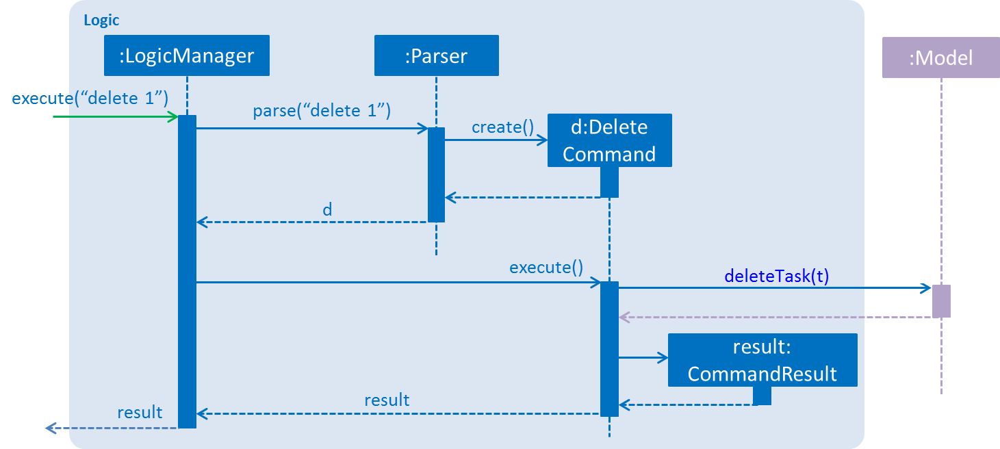
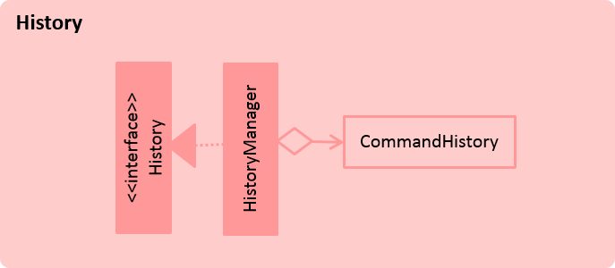

Diagram 1: Architecture Diagram
Taskell is a simple software for users to keep track of their daily tasks and manage their busy schedule. Keyboard lovers will be able to experience the full benefit of Taskell as it implements a command-line interface.
This developer guide will help you understand the design and implementation of Taskell. It helps you understand how Taskell works and how you can contribute for further development. This guide follows a top-down approach by giving an overview of the essential components first, followed by thorough explanation subsequently.
JDK 1.8.0_60 or later
Having any Java 8 version is not enough.
This app will not work with earlier versions of Java 8.
Eclipse IDE
File > Import Gradle > Gradle Project > Next > Next Browse, then locate the project's directoryClick Finish
- If you are asked whether to 'keep' or 'overwrite' configuration files, choose to 'keep'.
- Depending on your connection speed and server load, it can even take up to 30 minutes for the set up to finish (This is because Gradle downloads library files from servers during the project set up process)
- If Eclipse auto-changed any settings files during the import process, you can discard those changes.
Problem: Eclipse reports compile errors after new commits are pulled from Git
Gradle -> Refresh Gradle Project.Problem: Eclipse reports some required libraries missing
Diagram 1: Architecture Diagram
The Architecture Diagram given above explains the high-level design of the Application. Given below is a quick overview of each component.
Main has only one class called MainApp. It is responsible for,
Commons represents a collection of classes used by multiple other components. Two of those classes play important roles at the architecture level.
EventsCentre : Used by components to communicate with other components using events (i.e. a form of Event Driven design)(written using Google's Event Bus library)
LogsCenter : Used by many classes to write log messages to the Application's log file.
The rest of the Application consists five components.
UI : UI of the Application.Logic : Command executor.Model : Data Holder of the Application in-memory.Storage : Data read from, and written to the hard disk.History : Data holder of Application's command history (for undo only).Each of the five components
interface with the same name as the Component.{Component Name}Manager class. 
Diagram 2: Logic Class Diagram
The Logic component above defines it's API in the Logic.java interface and exposes its functionality using the LogicManager.java class.

Diagram 3: Sequence Diagram for Delete Task
The Sequence Diagram above shows how the components interact for the scenario where the user issues the command delete 1.
Note how the
Modelsimply raises aTaskManagerChangedEventwhen the Task Manager data is changed, instead of asking theStorageto save the updates to the hard disk.

Diagram 4: Sequence Diagram for Delete Task Event Handling
The diagram above shows how the EventsCenter reacts to that event, which eventually results in the updates being saved to the hard disk. The status bar of the UI is updated to reflect the 'Last Updated' time.
Note how the event is propagated through the
EventsCenterto theStorageandUIwithoutModelhaving to be coupled to either of them. This is an example of how this Event Driven approach helps us reduce direct coupling between components.
The sections below give more details of each component.

Diagram 5: UI Class Diagram
The diagram above gives an overview of how the UIcomponent is implemented.
API : Ui.java
The UI consists of a MainWindow that is made up of parts e.g.CommandBox, ResultDisplay, TaskListPanel, StatusBarFooter, BrowserPanel etc. All these, including the MainWindow, inherit from the abstract UiPart class and they can be loaded using the UiPartLoader.
The UI component uses JavaFx UI framework. The layout of these UI parts are defined in matching .fxml files that are in the src/main/resources/view folder.
For example, the layout of the MainWindow is specified in MainWindow.fxml
The UI component,
Logic component.Model so that the UI can auto-update when data in the Model changes.
Diagram 6: Logic Class Diagram
The diagram above gives an overview of how the Logic component is implemented.
API : Logic.java
The Logic component,
Parser class to parse the user command, resulting in a Command object which is executed by the LogicManager.Model (e.g. adding a task) and/or raise events.CommandResult to be passed back to the UI. 
Diagram 7: Add Task Sequence Diagram For Logic
The diagram above shows the Sequence Diagram for interactions within the Logic component for the execute("add buy cake") API call.

Diagram 8: Delete Task Sequence Diagram For Logic
The diagram above shows the Sequence Diagram for interactions within the Logic component for the execute("delete 1") API call.

Diagram 9: Model Class Diagram
The diagram above gives an overview of how the Model component is implemented.
API : Model.java
The Model component,
UserPref object that represents the user's preferences.UnmodifiableObservableList<ReadOnlyTask> that can be 'observed' e.g. the UI can be bound to this list so that the UI automatically updates when the data in the list change. 
Diagram 10: Storage Class Diagram
The diagram above gives an overview of how the Storage component is implemented.
API : Storage.java
The Storage component,
UserPref objects in json format and read it back. 
Diagram 11: History Class Diagram
The diagram above gives an overview of how the History component is implemented.
API : History.java
The History component,
Classes used by multiple components are in the seedu.taskmanager.commons package.
We are using java.util.logging package for logging. The LogsCenter class is used to manage the logging levels and logging destinations.
logLevel setting in the configuration file (See Configuration)Logger for a class can be obtained using LogsCenter.getLogger(Class) which will log messages according to the specified logging levelConsole and to a .log file.Logging Levels
SEVERE : Critical problem detected which may possibly cause the termination of the applicationWARNING : Program can continue, but with cautionINFO : Information showing the noteworthy actions by the ApplicationFINE : Details that is not usually noteworthy but may be useful in debugging e.g. print the actual list instead of just its sizeCertain properties of the application can be controlled (e.g Application name, logging level) through the configuration file (default: config.json)
To reset properties in the configuration file, delete config.json and run Taskell again.
Tests can be found in the ./src/test/java folder.
In Eclipse:
src/test/java folder and choose Run as > JUnit Test Using Gradle:
We have two types of tests:
GUI Tests - These are System Tests that test the entire Application by simulating user actions on the GUI. These are in the guitests package.
Non-GUI Tests - These are tests not involving the GUI. They include,
seedu.taskell.model.task.TaskDateTest seedu.taskell.storage.StorageManagerTest seedu.taskell.logic.LogicManagerTest Headless GUI Testing : Thanks to the TestFX library we use, our GUI tests can be run in the headless mode. In the headless mode, GUI tests do not show up on the screen. That means the developer can do other things on the Computer while the tests are running.
See UsingGradle.md to learn how to run tests in headless mode.
Problem: Tests fail because NullPointException when AssertionError is expected
See UsingGradle.md to learn how to use Gradle for build automation.
We use Travis CI to perform Continuous Integration on our projects. See UsingTravis.md for more details.
Here are the steps to create a new release.
v0.1 A project often depends on third-party libraries. For example, Taskell depends on the Jackson library for XML parsing. Managing these dependencies can be automated using Gradle. For example, Gradle can download the dependencies automatically, which is better than these alternatives.
a. Include those libraries in the repository (this bloats the repository size)
b. Require developers to download those libraries manually (this creates extra work for developers)
Priorities: High (must have) - * * *, Medium (nice to have) - * *, Low (unlikely to have) - *
| Priority | As a ... | I want to ... | So that I can... |
|---|---|---|---|
* * * |
new user | see user guide | refer to the different commands when I forget how to use the application. |
* * * |
user | add a task | take note of all my tasks. |
* * * |
user | delete a task | remove task that I no longer need. |
* * * |
user | find a task by its description | locate details of tasks without having to go through the entire list. |
* * * |
user | categorize my tasks | group and view tasks of similar type. |
* * * |
user | view all the tasks, sorted by day, month | plan my schedule. |
* * * |
user | edit task | make changes to the task created. |
* * * |
user | have a start and end time for an event | take note of the duration of the event. |
* * * |
user | set deadlines for a task | remember when the task is due. |
* * * |
user | undo my previous action | correct any mistakes made. |
* * * |
user | mark a task as done | focus on the uncompleted tasks. |
* * * |
user | have flexible command format | have various options to execute a command. |
* * * |
user | specify a folder with cloud syncing service as the storage location | I can easily access my task manager from different computers. |
* * * |
user | I want to see a list of completed tasks | view all the tasks I had done. |
* * |
user | delete tasks based on a certain index | delete a few tasks instead of one. |
* |
user | set some of my task recursively | schedule them on a daily/weekly/monthly basis. |
* |
user | be able to block multiple timeslots, and release the timeslots when timing is confirmed | schedule in events which have uncertain timings more efficiently. |
* |
user | sort tasks by priority | view the most important tasks. |
* |
user | edit my notification time period | customise if I wanted to be reminded earlier or later. |
* |
user | use the history command | saves time typing repeated commands. |
* |
user | view the task in either calendar form or list form | switch between the two display format. |
MSS
Extensions
2a. The user did not follow the given format to add the task
2a1. Taskell displays invalid command format warning
Use case resumes at step 1
MSS
Extensions
2a. The list is empty
3a. The given index is invalid
3a1. Taskell shows an error message
Use case resumes at step 2
MSS
Extensions
2a. The list is empty
3a. The given index is invalid
3a1. Taskell shows an error message
Use case resumes at step 2
MSS
Extensions
2a. The list is empty
3a. The given index is invalid
3a1. Taskell shows an error message
Use case resumes at step 2
4a. User tries to mark a uncompleted task as uncompleted
MSS
Extensions
2a. The user types "help" incorrectly
3a1. Taskell stil displays the help message
MSS
Extensions
1a. No keyword is given
1a1. Taskell shows an error message
MSS
Extensions
2a. The list is empty
3a. The given index is invalid 3b. The user did not key in the new field of the task 3c. The user did not key in a valid parameter
3a1, 3b1 and 3c1. Taskell shows an error message
Use case resumes at step 2
MSS
Extensions
3a. The user did not enter any previous command
3a1. Taskell shows a message indicating no commands available for undo
4a. The user enters invalid index
4a1. Taskell shows error message indicating index is invalid
MSS
Extensions
2a. The list is empty
2a1. Taskell shows an error message
Use case resumes at step 2
MSS
MSS
Extensions
1a. User gives invalid filename (contains illegal symbols not allowed in file names)
1a1. Taskell shows an error message and still saves data in previous old location.
2a. Data cannot be written to the requested folder (invalid directory or access prohibited)
2a1. Taskell shows an error message and still saves data in previous old location.
MSS
Extensions
3a. User cancels request
3a1. Taskell does not clear all tasks
MSS
Extensions NIL
1.8.0_60 or higher installed.Windows, Linux, Unix, OS-X
Tasks with no deadline
Pros:
1. Has support for cross-platform operations
2. Can share tasks with other people and manage them
3. Can categorize tasks into different categories
4. Can attach different types of file inside the task, such as photos, PDF and PowerPoint
Cons:
1. Has limited number of priority levels
2. Has no undo operation
Pros:
1. Can be used offline and tasks are synced once internet connection is established
2. Can handle some natural languages processing by saving deadlines from task information itself (e.g. Do math homework tomorrow: Saves task with deadline set to tomorrow)
3. Can undo when marking tasks as done (recover from accidentally marking a task as done)
4. Can set priority, and list tasks by priority
5. Can set recursive tasks
Cons:
1. Need to click frequently to enter or edit a task
2. Need to remember lots of shortcuts, so user is less likely to use them
3. Has a cluttered interface, which is not intuitive
4. Does not support calendar view in-house
Pros:
1. Can add in public holidays
2. Can update in terms of time zone
3. Can customize background picture
Cons:
1. Does not have flexibility in viewing the calendar
2. Has too much information in 1 page in application
Pros:
1. Displays a reminder when the task is almost due (set in advance)
2. Able to clear all tasks in one go
3. Do a daily review at the start/end of day
4. Arranges tasks by today, tomorrow, someday
Cons:
1. Requires internet connection
2. Has no support for recurring tasks
| Task Managers | WunderList | Remember the Milk | Google Calendar | Any.do | Taskell |
|---|---|---|---|---|---|
| CRUD | Available | Available | Available | Available | Available |
| Undo | Not Available | Available | Not Available | Available | Available |
| Sync across multiple platform | Available | Available | Available | Available | Available |
| Internet required | Required | Required | Required | Required | Not Required |
| Calendar | Not Available | Available | Available | Available | Available |
| Other Features | Attach different files and picture inside the task | Handle some natural languages | Able to add public holiday | Do a daily review at the start/end of day | Support for recurring tasks |